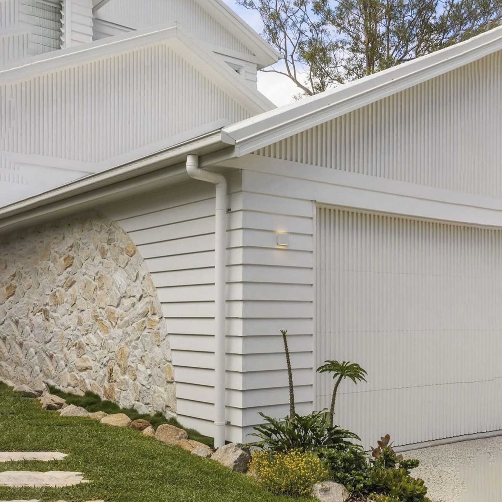
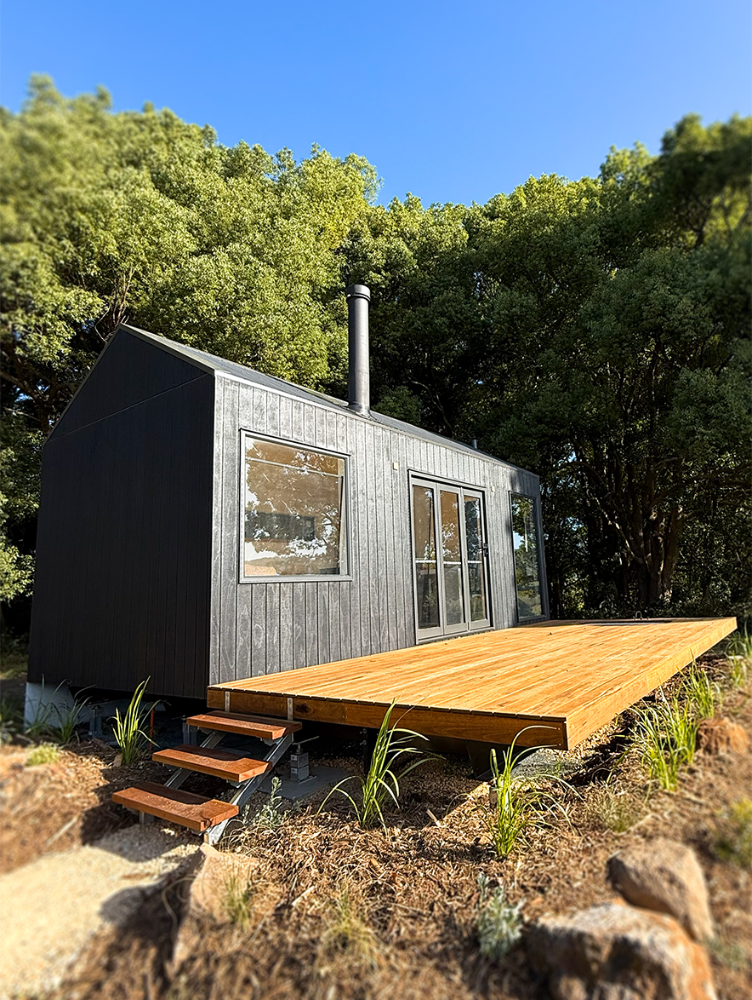
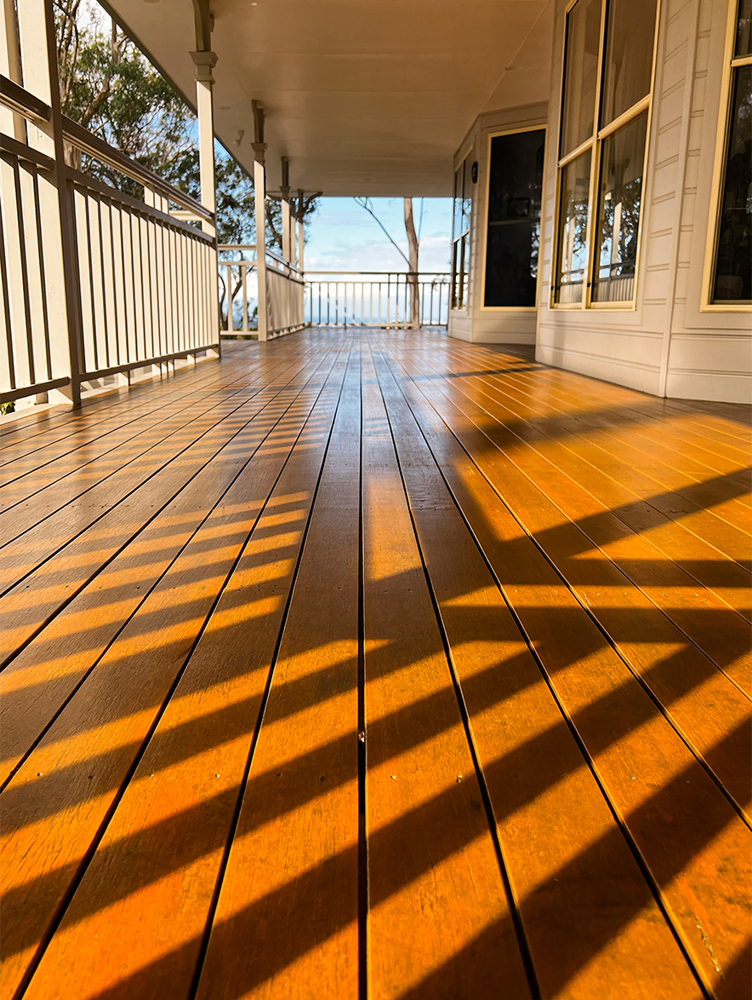
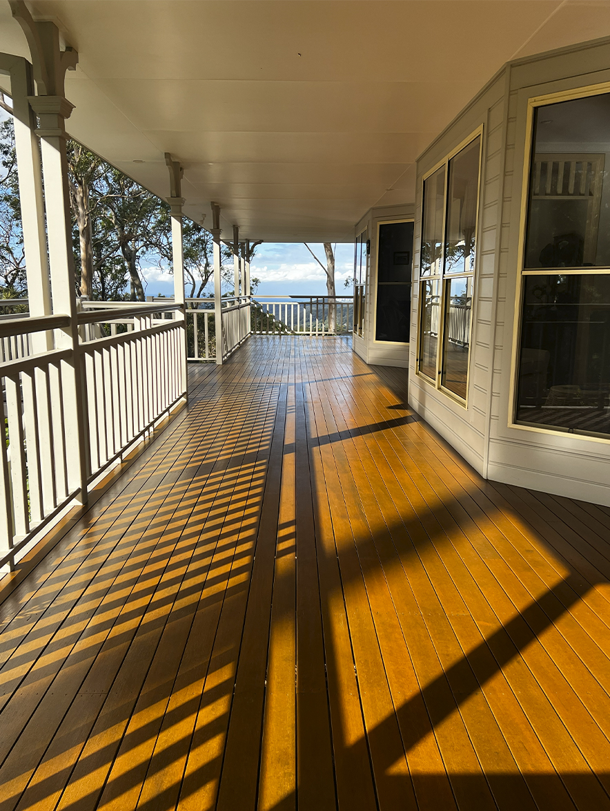
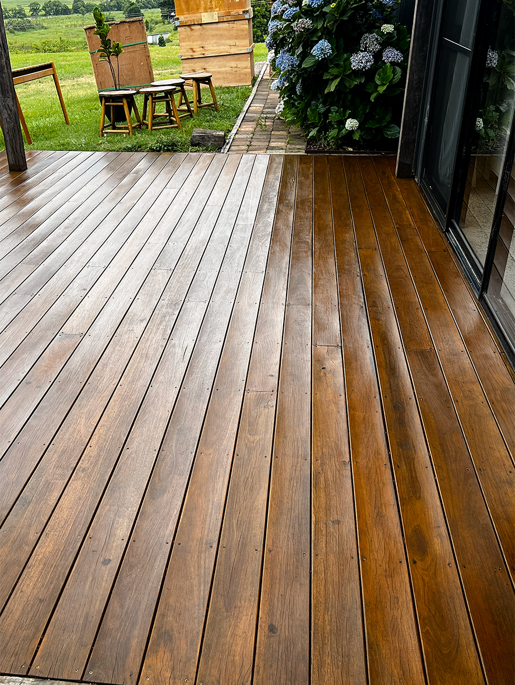

Deck Painting in Ballina
Deck painting and staining in Ballina, built to handle Northern Rivers weather across every season. The right coating keeps timber decks looking sharp without constant upkeep.

WHY PERMA PAINTING
We take a long-term view of painting.
Materials, methods and timing matter.
So does their impact.
LONG-TERM THINKING
LOW-TOX MATERIALS
CAREFUL SURFACE
PREPARATION
REDUCED WASTE
RELIABLE TIMELINES
SUSTAINABLE
HEAT RESISTANCE




SERVICE AREA
Painting Ballina and the surrounding area
Based in Byron Bay, we cover Ballina and the nearby coastal and hinterland communities. If you're just outside Ballina, chances are we work in your area too — including:
- East Ballina
- South Ballina
- Lennox Head
- Wardell
Other services and areas
More services in Ballina
Deck painting in other areas
WHAT OUR CLIENTS SAY
FAQ
Deck painting in Ballina — common questions
Should I paint, stain or oil my deck?
It depends on the timber and the look you want. We help you pick the right finish for your Ballina deck and the conditions it faces, so it stays protected and looks the part.
How do you handle weathered timber?
We clean, sand and prep weathered boards before any coating goes on — proper prep is what makes the finish last against humidity and sun.
How often will the deck need recoating?
It varies with exposure and the finish used, but the right coating keeps a Ballina deck looking sharp for years without constant upkeep.
Get a free quote in Ballina
Tell us about your deck and we'll get back to you with a clear, no-obligation quote.
GET IN TOUCHGET IN TOUCH